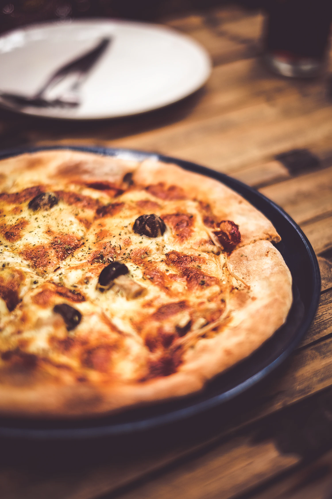
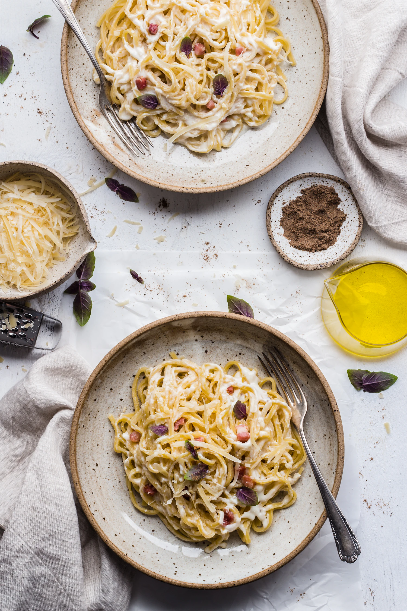
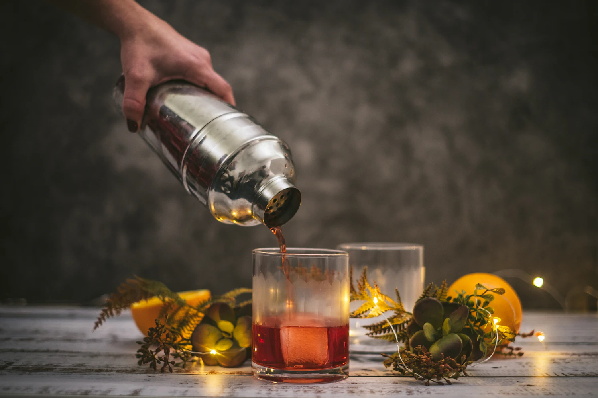
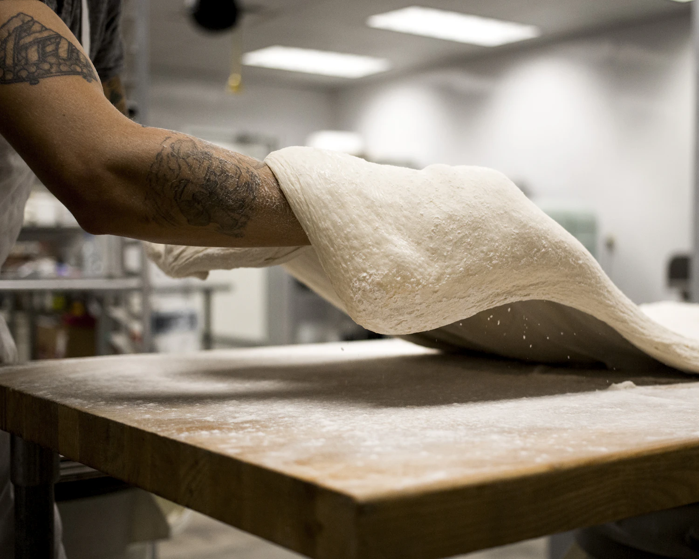

PASTA, PIZZA & APERITIVO
Come hungry.Stay a little.



An Italian kitchen for the first drink,
the last forkful, and everything between.
A restaurant imagined.
A table worth gathering around.

A LITTLE FLOUR. A LOT OF HEART.
Less fuss.
More flavour.
The idea behind SERA is simple: a short menu, generous plates, and a room that makes you forget to check the time.
Italian at heart. Easy at the table.
Step into the kitchenMAKE AN EVENING OF IT
One more course?
One more story.
Make room for a catch-up, a celebration,
or just a very good Tuesday.
Explore a table-planning preview. No reservation is made.